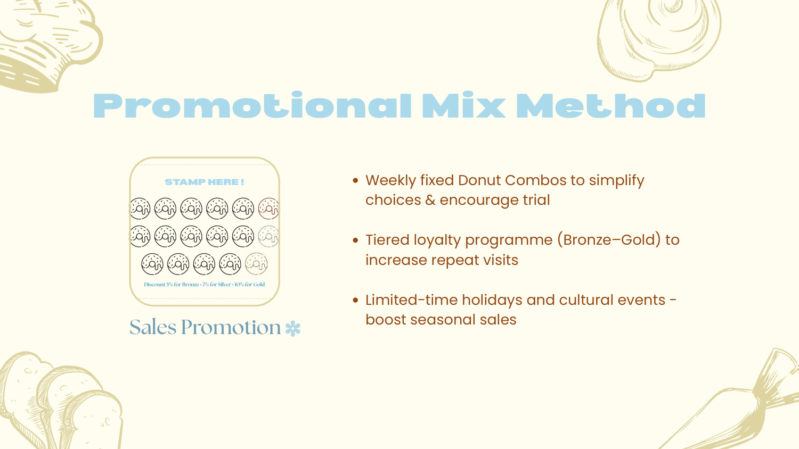
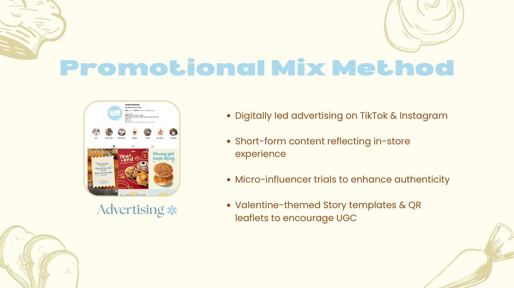

Lịm Donuts
A two-person integrated marketing campaign built around a simple idea: make sweet choices easier, more social and more memorable.
The campaign
Donut Overthink It reframed everyday donut choice as something effortless and feel-good. The campaign targeted two overlapping audiences: trend-driven treat seekers and “overthinking eaters” who experience decision fatigue when faced with too many choices.
High Distinction
Highest People’s Choice result among six booths
My role
This was a two-person academic project. My responsibilities included campaign planning and strategic direction, key-message development, content ideation, creative-concept development, video editing and production, and independently structuring the formal marketing report.
Integrated promotional mix
Public relations
A small-scale pop-up experience outside the Tô Hiệu store used mini-games and flavour-suggestion interactions to make brand discovery participatory.
Sales promotion
Fixed weekly donut combos simplified choice, while a tiered loyalty approach encouraged trial and repeat purchase.
Advertising
TikTok and Instagram short-form content connected the in-store experience to a digitally led awareness and engagement plan.
Exhibition
The academic exhibition became a live test of communication, adaptability and audience interaction, ultimately winning both People’s Choice and Most Interactive Booth.
Selected proof
A curated view of the work. The full files are embedded below so the case study stays readable without hiding the evidence.



Live / external
Open the live project or supporting archive in a new tab.
Content output
One of the produced content examples included in the project archive.
Project files
Preview the source material directly here, or open it in a new tab for full-screen reading.